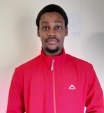

Personal Detail
Contact
- Date of birth: 21 December 1997
- Nationality: African
- English and isiZulu
- Driver’s License: C1
Educational Qualification
- High School: Lizwi High School
- Qualification: (NCS) Grade 12
- Tertiary: Cape Peninsular University of Technology
- Tiary Qualification: National Diploma in Civil Engineering
Summary
Highly motivated Civil Engineering professional with a National Diploma in Civil Engineering
and proficiency in Python programming. Currently enrolled in The Complete SQL Bootcamp:
Go from Zero to Hero.
Skills
- Microsoft Office
- Excel
- Word
- Power Point
- Work Software's
- AutoCAD
- Revit Design
- Sketch-up
- APX-GIS
- Adobe Illustrator
- QGIS
- Python (Bootcamp)
- SQL
Experience
Coreline Engineering Solutions (Present)
- Position: High Level Design (Team Lead)
- Effective team leader, providing support, motivation, and guidance to a team of planners.
- Skilled in monitoring quality, productivity, and compliance with project goals and requirements.
- Proficient in telecommunications planning, making informed decisions aligned with
regulations and industry standards.
- Experienced in fostering a culture of continuous learning, recognizing successes, and
promoting team-building activities.
- Strong focus on customer centricity, ensuring compliance, and delivering quality outcomes.
- Excellent communication and organizational skills, with a track record of meeting project targets and KPIs.
- Position: Splice Plan (Team Lead)
Responsibilities:
- Planning: Creating splice plans based on High Level Design (HLD) with a team of 5 people.
- Quality Control (QC): Ensuring all plans meet high-quality standards and deadlines are met.
- As-build: Performing revisions and ensuring plans match site work.
- Bill Of Quantities (BOQ): Generating BOQs for plans.
- High Level Design (HLD): Planning and designing routing of fiber and arranging fiber cable in a cost-effective way (FTTX).
Q & A Consulting (Pty) Ltd (6 Months)
- Position: Civil Engineering Technician (training)
Responsibilities:
- Taking off Quantities for: Asphalt patches, Texture Slurry, and Armor Seal.
- Tender Evaluation: Point awarding for subcontractors.
- Daily Diaries: Keeping daily project records.
- Lab work: Binder content check for Asphalt and Texture Slurry.
Freelancer Drawings
- Technical Drawings:
- Engineering Graphics and Design (3 year)
- Technical Drawings (1 year)
- CAD Drawings (1 yeas)
Reference: